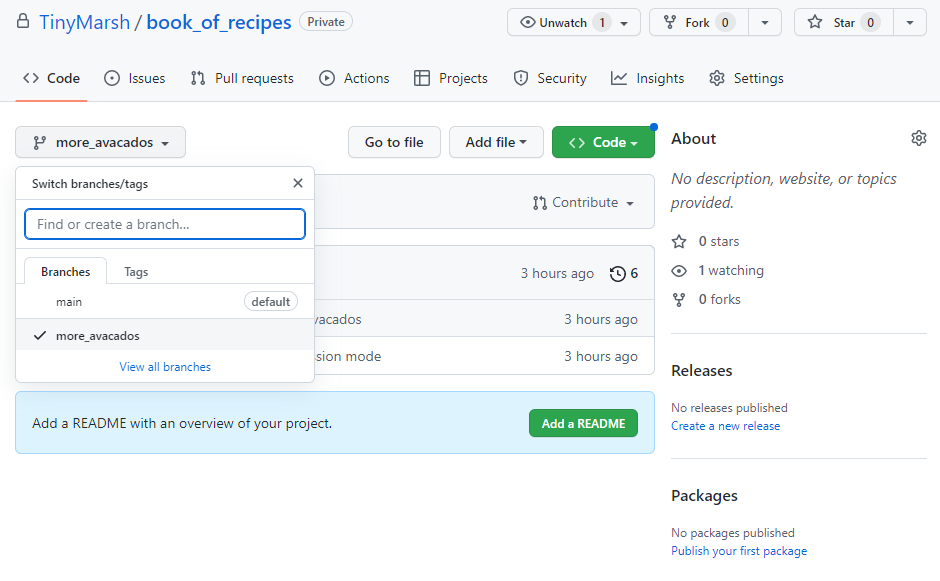
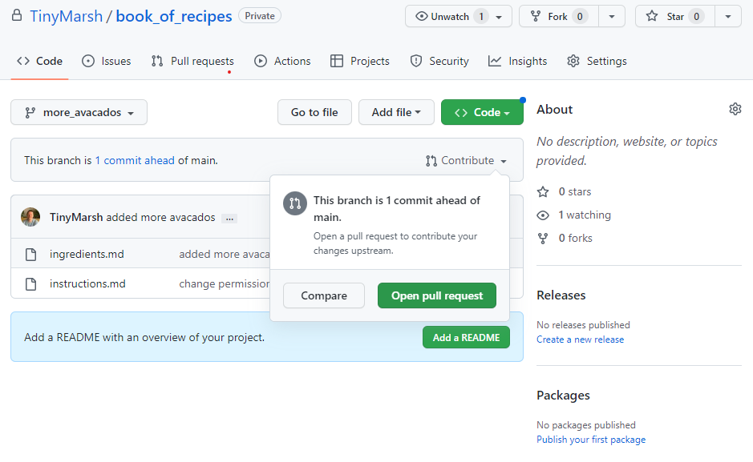
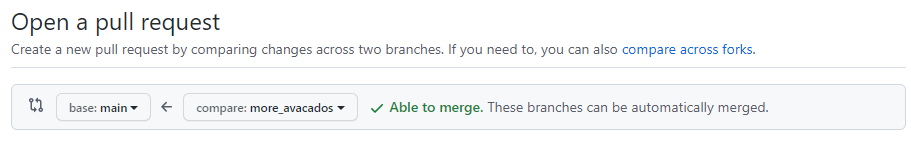
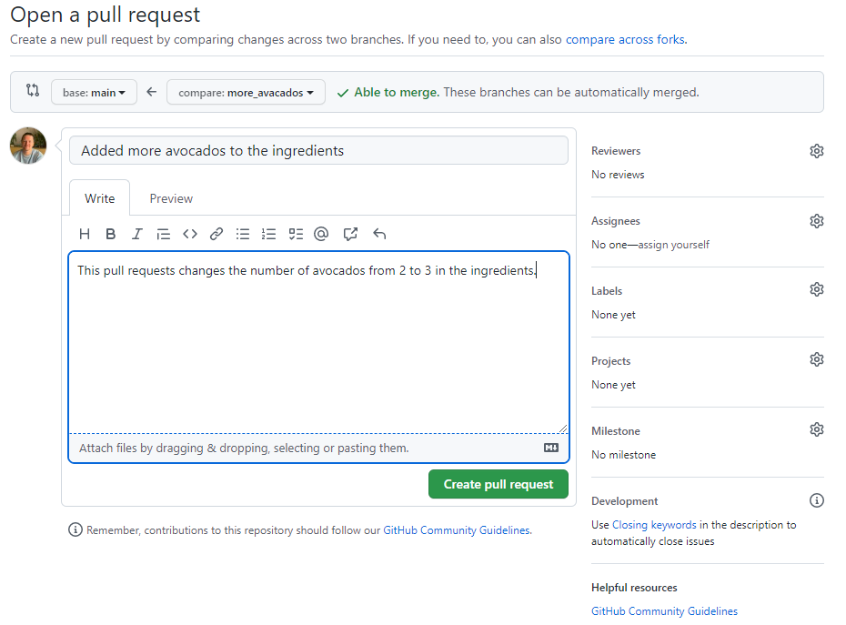

Managing contributions to code
Last updated on 2025-10-16 | Edit this page
Estimated time: 25 minutes
Overview
Questions
- How do I keep my local branches in sync with the remote branches?
- What is the difference between forking and branching?
- How can my group use GitHub pull requests to manage changes to a code?
- How can I suggest changes to other people’s code?
- What makes a good pull request review?
Objectives
- Create a pull request from a branch within a repository.
- Create a pull request from a forked repository.
Motivation for remote repositories
Access and Permissions
Developer 1 - “Just email me your changes. I’ll save them into the master copy.”
Developer 2 - “Ok… so why do all of my changes have to go through you?”
GitHub gives you a central place to collaborate!
Need to Coordinate Efforts
Developer 1 - “I’m still waiting on those changes to the data analysis workflow.”
Developer 2 - “Huh? I added those a month ago.”
Issues help keep track of tasks.
Different Points of View
Developer 1 - “Here’s what I’ve been working on for the last month.”
Developer 2 - “Hmmm… if we tweak things here then it might be faster.”
Pull Requests allow for easily reviewing collaborators’ changes.
Pull Requests
Pull requests are a GitHub feature which allows collaborators tell each other about changes that have been pushed to a branch in a repository. Similar to issues, an open pull request can contain discussions about the requested changes and allows collaborators to review proposed amendments and follow-up commits before changes are either rejected or accepted and merged into the base branch.
Overview
Questions
- How do I keep my local branches in sync with the remote branches?
- What is the difference between forking and branching?
- How can my group use GitHub pull requests to manage changes to a code?
- How can I suggest changes to other people’s code?
- What makes a good pull request review?
Objectives
The term “Pull Request” may sound counterintuitive because, from your perspective, you’re not actually requesting to pull anything. Essentially it means “Hey, I have some changes I would like to contribute to your repo. Please, have a look at them and pull them into your own.”
You may see the term merge request instead of
pull request. These are exactly the same thing. Different
platforms use different terms but they’re both asking the receiver of
the request to review those changes prior to merging them.
There are two main workflows when creating a pull request which reflect the type of development model used in the project you are contributing to;
- Pull request from a branch within a repository and,
- Pull request from a forked repository.
Essentially, the way you use pull requests will depend on what permissions you have for the repository you are contributing to. If the repository owner has not granted you write permission, then you will not be able to create and push a branch to that repository. Conversely, anyone can fork an existing repository and push changes to their personal repository.
About forks
Before we get into understanding pull requests, we should first get to grips with what a fork is, and how it differs from a branch.
- By default, a public repository can be seen by anyone but only the owner can make changes e.g. create new commits or branches.
-
Forkinga repository means creating a copy of it in your own GitHub account. - This copy is fully under your control, and you can create branches, push new commits, etc., as you would do with any other of your repos.
-
forkis a GitHub concept and not Git. - Forks are related to the original repository, and the number of forks a given repository has can be seen in the upper right corner of the repo page.
- If you have some changes in your fork that you want to contribute to
the original repo, you open a
pull request. - You can bring changes from an upstream repository to your local fork.
Now let’s take a closer look at those two types of development models;
1. Pull request from a branch within a repository
This type of pull request is used when working with a shared
repository model. Typically, with this development model, you
and your collaborators will have access (and write permission) to a
single shared repository. We saw in a previous episode how branches can
be used to separate out work on different features of your project. With
pull requests, we can request that work done on a feature branch be
merged into the main branch after a successful review. In
fact, we can specify that the work done on our feature branch be merged
into any branch, not just main.
Pull requests can be created by visiting the
Pull request tab in the repository.
Changing head and base branch
By default, pull requests are based on the parent repository’s default branch. You can change both the parent repository and the branch in the drop-down lists. It’s important to select the correct order here; the head branch contains the changes you would like to make, the base branch is where you want the changes to be applied. The arrow between the drop-downs is a useful indicator for the direction of the “pull”.
Now you try
Let’s revisit our recipe repository.
- Create a new branch, make some changes and push the branch to the remote repository.
- Create a pull request with a suitable title and description to merge the branch containing your changes into the main branch.
$ git branch more_avocados$ git switch more_avocados$ # make, stage, commit, and push the changes- On GitHub.com, navigate to your repository and choose your branch
which contains your changes from the “Branch” menu.

- From the “Contribute” drop-down menu, choose the “Open pull request”
button.

- From the base branch drop-down menu, choose the branch you
want your changes to be merged into, and in the compare
drop-down menu, choose the branch which contains your changes.

- After giving a suitable title and description for your pull request,
click the “Create pull request” button.

Dive deeper
For a deeper dive into this “feature branch workflow”, have a read of the Atlassian example - Git Feature Branch Workflow
2. Pull request from a forked repository
Forks are often used in large, open-source projects where you do not have write access to the upstream repository (as opposed to smaller project that you may work on with a smaller team). Proposing changes to someone else’s project in this way is called the fork and pull model, and follows these three steps;
- Fork the repository.
- Make the changes.
- Submit a pull request to the project owner.
This fork and pull model is a key aspect of open-source projects, allowing community contributions whilst reducing the amount of friction for new contributors in terms of being able to work independently without upfront coordination. Another benefit of forking is that it allows you to use someone else’s project as a starting point for your own idea.
After forking the repository, the second step is to make our
fix/changes. First we will need to clone our fork so
that we have the files in that repository locally on our computer
(clone command was covered in the introductory
course). From here we can go ahead and create a new fix/feature
branch and make our changes. When we are happy with the changes we have
made, we can commit and push our upstream,
forked repository.
The third and final step in the workflow is to create a pull request. This is done in the same way as in the shared repository model above (navigate to your forked repository, click on the “Contribute” drop-down menu, then click the “Open pull request” button), only this time instead of the base branch being one in your repository, it is a branch in the upstream repository that you forked.
Another difference with forked repositories is to do with permissions. If you push to a branch in the upstream repository, anyone with write access can modify your branch by pushing to it, so maintainers can make changes directly before merging a PR, for instance. (It is generally better to make suggestions rather than editing someone else’s branch, however). If you have a forked repository, maintainers of the upstream will not have permission to edit branches in your repository by default; if you would like them to be able to do so, you have to opt in by selecting the Allow edits from maintainers option.
Dive deeper
As with the shared repository model, Atlassian has a nice Forking Workflow example if you want a deeper dive.
Requesting reviewers
- When opening a PR, you can request it to be reviewed by someone else, so there is another pair of eyes making sure that your contribution is correct and does not introduce any bugs.
- Reviewers can just comment on the PR, approve it, or request changes before it can be approved.
- Some repositories might require the approval of one or more reviewers before the changes can be merged into the target branch. This can be set up by the repository manager(s) as a branch protection rule.
- Only maintainers of the target repository can merge a PR.
Reviewing a PR
- When reviewing a PR, you will be shown, for each file changed, a
comparison between the old and the new version, much like the
git diffcommand (indeed, it isgit diffbetween the original and target branches, just nicely formatted). - You can add comments and suggest changes to specific lines in the code.
- Comments and suggestions must be constructive and help the code to become better. Comments of the type “this can be done better” are discouraged. The CONTRIBUTING or the CODE_OF_CONDUCT files often contain information on how to make a good review.
Closing GitHub Issues
The introductory course - Using GitHub Issues - describes how issues work on GitHub, but one handy functionality that is specific to pull requests is being able to automatically close an issue from a pull request.
If a PR tackles a particular issue, you can automatically close that
issue when the PR is merged by indicating
Close #ISSUE_NUMBER in any commit message of the PR or in a
comment within the PR.
- Forks and pull requests are GitHub concepts, not git.
- Pull request can be opened to branches on your own repository or any other fork.
- Some branches are restricted, meaning that PR cannot be open against them.
- Merging a PR does not delete the original branch, just modifies the target one.
- PR are often created to solve specific issues.